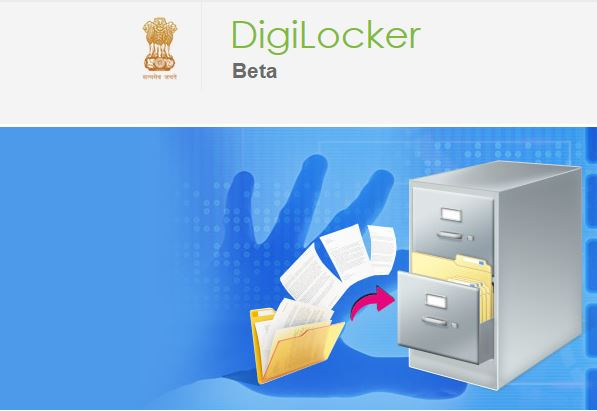

31
X is a service launched by Government of India in February 2015 to provide a secure dedicated personal electronic space for storing the documents of resident Indian citizens. The storage space (maximum 1GB) is linked to the Aadhar number of the user. The space can be utilized for storing personal documents like University certificates, PAN cards, Voter ID cards and the URLs of e-documents issued by Govt. departments. Identify X.
